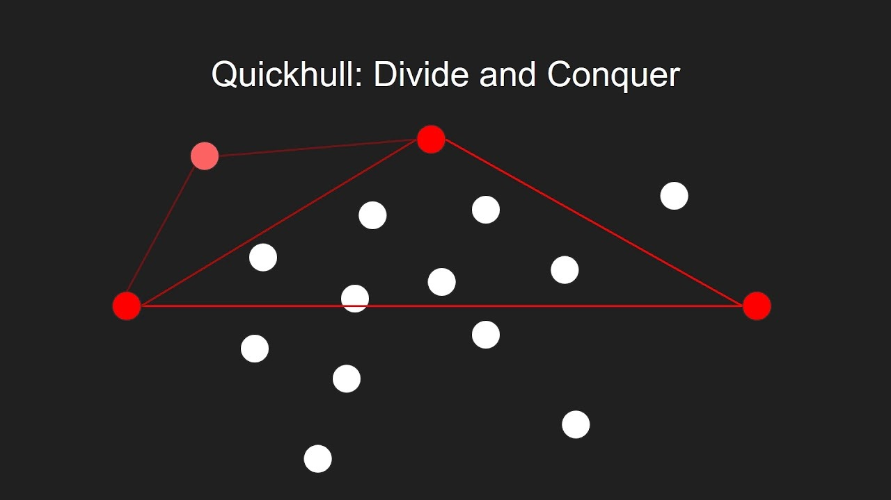

Esta web interactiva ilustra paso a paso la construcción del cierre convexo de una nube de puntos utilizando el algoritmo Quickhull.
Es el proyecto final de la asignatura de Geometría Computacional del Grado en Ingeniería Matemática e Inteligencia Artificial, realizado por María González Gómez, Lydia Ruiz Martínez y David Tarrasa Puebla.
Introducción
El algoritmo Quickhull es una técnica eficiente para calcular el cierre convexo de una nube de puntos en un espacio bidimensional.
El algoritmo utiliza un enfoque de divide y vencerás para encontrar los puntos extremos y construir el polígono convexo que los rodea.
Esta implementación permite visualizar cómo se forma el cierre convexo de una nube de puntos paso a paso, lo cual facilita la comprensión del algoritmo.
Instrucciones
Para utilizar el applet interactivo, sigue estos pasos:
- Usa el control deslizante para seleccionar el número de puntos a generar en el plano.
- Haz clic en "Distribución" para seleccionar la distribución de los puntos (uniforme o normal).
- Usa el control deslizante para seleccionar el paso a mostrar del algoritmo.
- Observa cómo el algoritmo divide los puntos y calcula la envolvente convexa paso a paso.
Discusión y aplicaciones reales
El algoritmo Quickhull es esencial en diversas aplicaciones que requieren la construcción de polígonos convexos a partir de un conjunto de puntos.
Algunos ejemplos de aplicaciones son:
-
Geometría Computacional: Quickhull es utilizado para resolver problemas en geometría, como la triangulación de superficies o el análisis de objetos en un espacio tridimensional.
-
Visión por Computadora: En la visión por computadora, Quickhull se usa para detectar los bordes de un objeto o para segmentar una imagen en diferentes regiones de interés.
-
Robótica: El cálculo del cierre convexo ayuda en la navegación de robots en entornos complejos, especialmente en la planificación de rutas.
-
Análisis de datos en Big Data: Quickhull se utiliza para encontrar el conjunto de puntos más extremos en grandes conjuntos de datos, lo que permite identificar límites o anomalías.
-
Reconocimiento de patrones: en el aprendizaje automático, Quickhull ayuda a definir las regiones convexas que agrupan datos similares en problemas de clasificación o agrupamiento.
-
Modelado de Terrenos: en sistemas de información geográfica (GIS), Quickhull se emplea para modelar superficies terrestres mediante la creación de envolventes convexas en mapas tridimensionales.